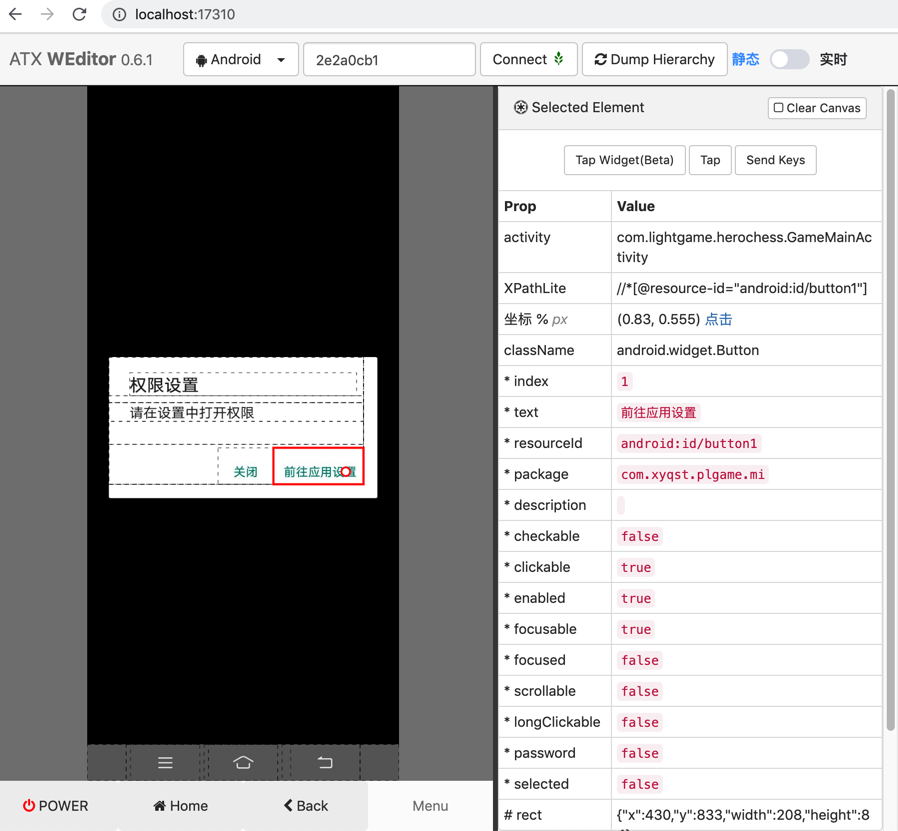

实际案例
此处整理和uiautomator2相关的一些实际案例，供参考。
监听特定元素
对于如下各种常见的按钮，可以用对应代码实现自动点击：
- 确定类按钮
- 广告类弹框
- Vivo自动安装app
- 奇虎360自动登录账号
详情请见后续章节。
以及其他一些小的例子：
下一步
代码：
NextStep_Button_Xpath_List: [
"//android.widget.TextView[@text='下一步' and contains(@resource-id, 'id/bt_dialog_right_tv')]", # 设置权限说明 启用存储权限 -> 下一步
]
for eachXpath in NextStep_Button_Xpath_List:
self.driver.watcher.when(eachXpath).click()
可以点击 下一步 类的按钮：
游戏app截图：

weditor截图：

属性：
Prop Value
activity com.btgame.onesdk.frame.activity.PermissionHelperActivity
XPathLite //*[@resource-id="com.baitian.alx.alxsy.mi:id/bt_dialog_right_tv"]
坐标 % px (0.59, 0.626) 点击
className android.widget.TextView
* index 0
* text 下一步
* resourceId com.baitian.alx.alxsy.mi:id/bt_dialog_right_tv
* package com.baitian.alx.alxsy.mi
* description
* checkable false
* clickable true
* enabled true
* focusable true
* focused false
* scrollable false
* longClickable false
* password false
* selected false
# rect {"x":815,"y":423,"width":218,"height":85}
详见：
【或许解决】用uiautomator2实现自动检测并点击安卓弹框：下一步
自动同意前往应用设置的权限
代码：
Permission_Settings_GoTo_App_Config_Xpath: "//android.widget.Button[@resource-id='android:id/button1' and @text='前往应用设置']"
def autoGrantPermission(self):
"""Auto grant permission for permission popup
权限设置 弹框
关闭 前往应用设置
"""
gotoAppSettingsStr = "前往应用设置"
gotoAppSettingsElement = self.driver(text=gotoAppSettingsStr, className="android.widget.Button", resourceId="android:id/button1", clickable="true")
if gotoAppSettingsElement:
gotoAppSettingsElement.click()
logging.info("Has clicked %s button", gotoAppSettingsStr)
time.sleep(0.1)
else:
logging.warning("Not found %s button", gotoAppSettingsStr)
游戏app截图：
weditor截图：

属性：
Prop Value
activity com.lightgame.herochess.GameMainActivity
XPathLite //*[@resource-id="android:id/button1"]
坐标 % px (0.83, 0.555) 点击
className android.widget.Button
* index 1
* text 前往应用设置
* resourceId android:id/button1
* package com.xyqst.plgame.mi
* description
* checkable false
* clickable true
* enabled true
* focusable true
* focused false
* scrollable false
* longClickable false
* password false
* selected false
# rect {"x":430,"y":833,"width":208,"height":84}
代码 d(resourceId="android:id/button1")
注：未完待续
详见：
【未解决】自动化测试工具新增逻辑：权限设置弹框前往应用设置并允许